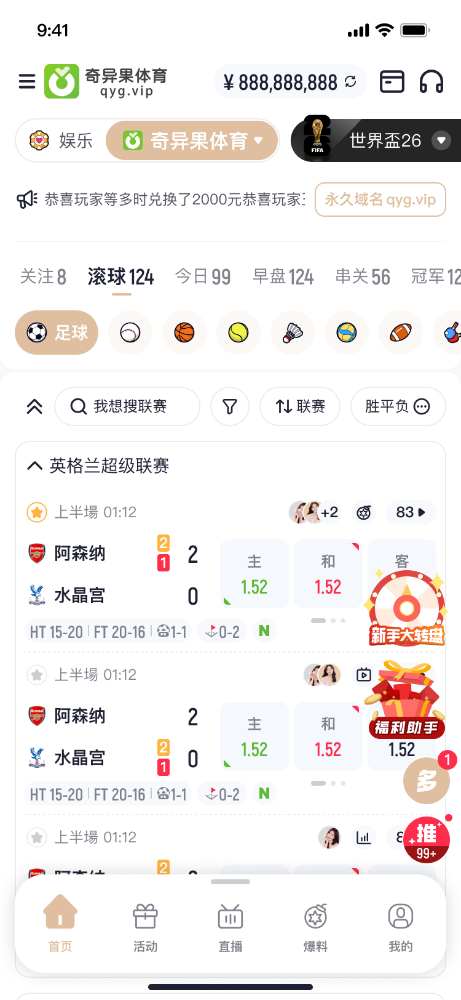
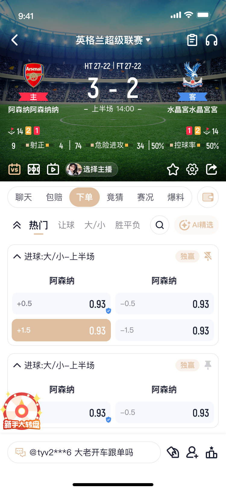
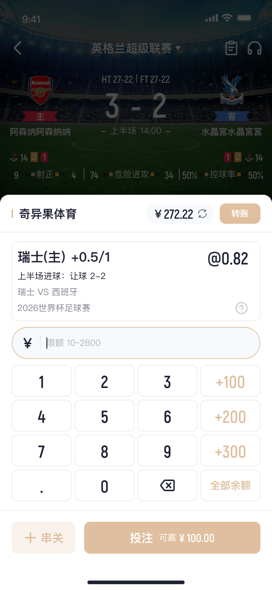
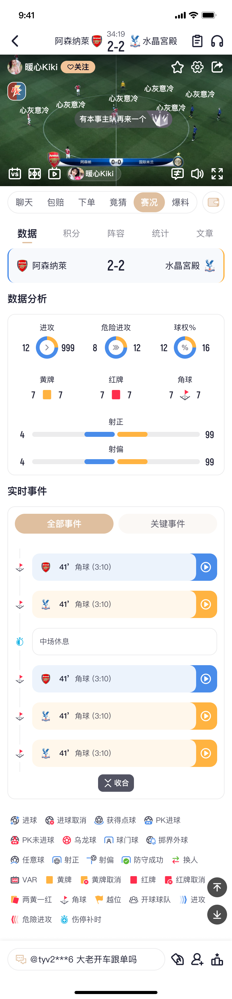
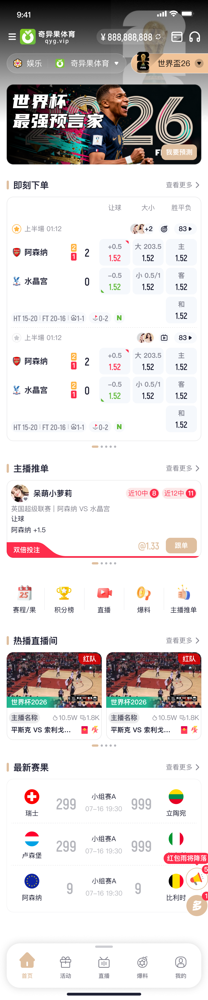
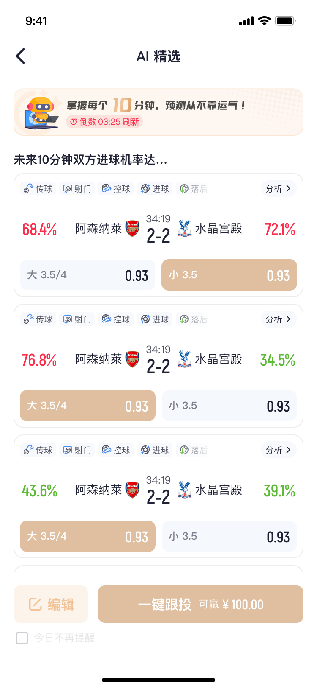

PM 三條主要動線：
❶ 下注 — 首頁選場館/球種/時段 → 賽事列表 → 點賠率 → 購物車下注
❷ 觀賽 — 賽事詳情 → 直播/賽況/聊天室
❸ 跟單 — 推單/AI精選/競猜 → 一鍵跟投 → 購物車下注
所有路徑最終都匯入購物車（收斂點），改購物車 = 改全部路徑。
❶ 下注 — 首頁選場館/球種/時段 → 賽事列表 → 點賠率 → 購物車下注
❷ 觀賽 — 賽事詳情 → 直播/賽況/聊天室
❸ 跟單 — 推單/AI精選/競猜 → 一鍵跟投 → 購物車下注
所有路徑最終都匯入購物車（收斂點），改購物車 = 改全部路徑。
主要動線
下注主流程
進入首頁
→
切換場館
→
選球種
→
選時段
→
賽事列表
→
點賠率
→
購物車下注
各頁面業務規則
🏠 體育首頁 9 條規則

| # | 條件 | 行為 | 改動成本 | PM 注意 |
|---|---|---|---|---|
| 1 | 使用者切換場館 tab | 切到該場館的賽事列表，API 帶不同 vendor 參數 | 設定層 | 後端 serverAvailable 控制哪些場館顯示；8 個場館不是對等的 |
| 2 | 使用者切換球類 tab | 切到該球類賽事列表 | 場館限制 | 球類由場館下發 sportId，部分球類要後台白名單 |
| 3 | 使用者切換日期分頁（滾球/今日/早盤/串關/冠軍） | 前端切 PERIOD_TYPES 分支，API 呼叫參數不同 | 程式層 | 改文案不只是改 tab 名字，是切到不同 API 分支 |
| 4 | 使用者在簡易盤點選盤口 | 直接加入購物車（單注模式覆蓋舊的） | 程式層 | 每個場館有獨立的 simpleMarketConfig，場館間行為不一致 |
| 5 | 使用者切換新手版/專家版 | 切換盤口配置（NEWBIE_MARKET_CONFIG vs 專家版） | 設定層 | 新手版由後台控制 |
| 6 | 維護中場館 | serverAvailable=false 顯示維護頁面 | 設定層 | 後台控制開關 |
| 7 | 輪詢更新 | 登入 5 秒 / 未登入 30 秒 | 程式層 | 大賽事時段流量暴增，需預先擴容 |
| 8 | 賽事帶包賠標示 | 首存包賠賽事顯示特殊 tag | 程式層+設定層 | 依賴活動模組 useFirstPay，改首存包賠要回測體育列表 |
| 9 | OB 場館早盤 | 必須用 LIVE_AND_TODAY（period=5），不能用 ALL | 場館限制 | OB 跟其他場館邏輯不同 |
- 體育和電競不能混合串關。購物車會檢查，但 PM 寫需求時先確認球種分類。
RD 參考（展開）
Code: pages/home/index/sport/ (28 components)
Key files: BaseSportLayout.vue, useSimpleMarket/index.ts, stores/game.ts
Config: fbConfig / obConfig / sabaConfig (simpleMarketConfig per vendor)
Key files: BaseSportLayout.vue, useSimpleMarket/index.ts, stores/game.ts
Config: fbConfig / obConfig / sabaConfig (simpleMarketConfig per vendor)
📋 賽事詳情 12 條規則

| # | 條件 | 行為 | 改動成本 | PM 注意 |
|---|---|---|---|---|
| 1 | 使用者進入賽事詳情頁 | 載入場館下發的賽事資料（隊名、比分、盤口、賠率） | 場館限制 | 隊名/icon/比分/賠率全來自場館，我方無法修改 |
| 2 | 盤口顯示鎖盤狀態 | 前端禁止點選，顯示鎖定 icon | 場館限制 | 場館 islocked 控制，鎖盤就是鎖盤 |
| 3 | 使用者切換賠率制（馬/港/歐/印） | 前端即時換算顯示 | 程式層 | 換算公式在 calcOdds，只改顯示不改實際賠率 |
| 4 | 使用者點下方分頁 tab | 切換顯示對應內容（聊天/競猜/賽況/包賠/爆料/下注單） | 程式層 | tab 順序前端寫死，改排序要發版 |
| 5 | 競猜盤口出現 | 主播 PK 推送的盤口，獨立於場館盤口 | 程式層 | 競猜盤口跟場館盤口是兩套系統，PM 不要混講 |
| 6 | 後台開啟各按鈕 | 根據房間權限 permissions.isShow* 顯示或隱藏 | 設定層 | 每個房間獨立設定 |
| 7 | 有直播來源時 | 顯示直播影片（場館下發 URL） | 場館限制 | flv/m3u8/iframe，URL 是場館的 |
| 8 | 聊天室 openstate=0 | 聊天室關閉，顯示「此聊天室暫未開放」 | 設定層 | 後台可控制開關 |
| 9 | 純直播模式開啟 | 過濾 clientType>=2 訊息 + 不顯示曬單 | 設定層 | isOnlyLive 控制 |
| 10 | 首存包賠活動開啟 | 顯示包賠彈窗 | 設定層 | 後台 firstPayConfig.isActive 控制 |
| 11 | Rally 活動進行中 | 顯示進度條和曬單 | 設定層 | 活動模組注入，改 Rally = 改活動模組，要回測體育 |
| 12 | 下注來源追蹤 | chatRoom/pushOrder/live/matchDetail 各有獨立 hitpoint | 程式層 | 五種來源各自追蹤，QA 要分開測 |
- 競猜盤口跟場館盤口是兩套系統。PM 提需求時務必分清楚「體育盤口」和「競猜/PK 盤口」，兩邊的改動範圍完全不同。
RD 參考（展開）
Code: pages/match-detail/ (80+ files, 32 composables)
Key files: OddsItem.vue, BetTypeCard.vue, VideoPlayer/index.vue, useChatRoom, useLiveBetting, BottomTabList
APIs: apis/unify/ (all venue-proxied)
Key files: OddsItem.vue, BetTypeCard.vue, VideoPlayer/index.vue, useChatRoom, useLiveBetting, BottomTabList
APIs: apis/unify/ (all venue-proxied)
🛒 購物車 13 條規則

⚠ 收斂點 — 購物車是體育系統的收斂點：所有下注路徑最後都打這一個 store。任何「只是改一下購物車」的需求——預設為大需求，工時 +30%。
| # | 條件 | 行為 | 改動成本 | PM 注意 |
|---|---|---|---|---|
| 1 | 使用者點選盤口加入購物車 | 單注模式：覆蓋舊盤口；串關模式：push 進陣列 | 程式層 | 五種來源（簡易盤/推單/跟單/追注/首存包賠）走同一個 store |
| 2 | 使用者按下注前 | 系統自動撈最新賠率比對 | 場館限制 | 賠率變動非我方控制 |
| 3 | 賠率在下注送出到成交之間變動 | 彈窗讓使用者選擇「接受新賠率」或「拒絕」 | 場館限制 | TSD-5073 踩坑：前端必須阻塞流程顯示新賠率，不能靜默接受 |
| 4 | 使用者餘額不足 | 彈窗引導前往充值頁 | 程式層 | |
| 5 | 使用者連按同一個盤口 | 重複下注保護彈窗 | 程式層 | |
| 6 | 使用者輸入金額 | 校驗四組邊界：最低/最高/場館限額/會員餘額 | 設定層 | 快捷金額由後台配，TSD-5085 踩坑：APP 快捷鍵邏輯跟 H5 不一致 |
| 7 | 使用者切換串關模式 | 多盤口加入，自動計算組合賠率 | 程式層 | 串關可能有場館限制（不是所有場館的盤口都能混串） |
| 8 | 串關超過 10 注 | 顯示「超过最大串关数」toast | 程式層 | 硬編碼上限 |
| 9 | 同一賽事選第二個盤口 | 自動移除第一個，只保留新選的 | 程式層 | |
| 10 | 預約下注（fb 場館） | 設定觸發條件，條件達成自動送單 | 設定層 | 只有 fb 場館支援，其他場館沒有 |
| 11 | Cash Out 按鈕 | 場館決定有沒有此功能 | 設定層 | Cash Out 是場館提供的，我方控制不了規則 |
| 12 | 1X2/獨贏/勝負 下注 | 強制使用歐洲盤賠率 | 程式層 | 不管使用者設定什麼賠率制，這幾種盤型強制歐洲盤 |
| 13 | 下注成功/失敗 | 顯示結果彈窗 + 打點上報 | 程式層 | 通知受使用者偏好設定控制，可被關閉 |
- 購物車是所有下注路徑的唯一收斂點，改動前先評估影響範圍。
- TSD-5073：賠率變動不能靜默接受，必須彈窗確認。
- TSD-5085：APP 快捷金額鍵邏輯跟 H5 不一致，需分開測試。
RD 參考（展開）
Code: stores/carts.ts (1172 lines) + cart UI across pages
Key files: carts.ts, getBetInfo, utils/sport/index.ts L120-154
5 bet sources: simpleMarket / pushOrder / chatRoom / live / firstPay
Key files: carts.ts, getBetInfo, utils/sport/index.ts L120-154
5 bet sources: simpleMarket / pushOrder / chatRoom / live / firstPay
📈 賽況 3 條規則

| # | 條件 | 行為 | 改動成本 | PM 注意 |
|---|---|---|---|---|
| 1 | 使用者點賽況 tab | 足球和籃球各有獨立版面 | 程式層 | GOR-5563 賽況改版 |
| 2 | 有直播影片 | 可同時 PiP 觀看影片和瀏覽數據 | 程式層 | |
| 3 | 賽事結束 | 顯示最終比分和統計 | 場館限制 | 結算時間場館決定 |
RD 參考（展開）
Code: pages/match-detail/components/MatchLiveStates/
GOR: GOR-5563 賽況改版
GOR: GOR-5563 賽況改版
🏆 杯賽專區 5 條規則

| # | 條件 | 行為 | 改動成本 | PM 注意 |
|---|---|---|---|---|
| 1 | 進入杯賽頁 | 多 tab 頁面：即刻下單/推單/賽程賽果/積分榜/直播/爆料 | 程式層 | GOR-6091 杯賽改版 |
| 2 | 杯賽主題模式 | 兩種皮膚（標準/自訂 dark+light） | 設定層 | 暖場模式背景全屏 |
| 3 | 預言家活動 | 團隊預測 + 淘汰預測，完整活動流程 | 程式層 | 獨立活動模組 |
| 4 | OB 場館 | 必須用 LIVE_AND_TODAY period type | 場館限制 | 跟首頁同一條限制 |
| 5 | 首存包賠整合 | 杯賽頁也有包賠入口 | 設定層 | 跟首頁體育共用 useFirstPay |
RD 參考（展開）
Code: pages/home/index/topic/ (18 files) + composables/useTopicMarket/
GOR: GOR-6091 杯賽改版
GOR: GOR-6091 杯賽改版
🤖 AI 精選 5 條規則

| # | 條件 | 行為 | 改動成本 | PM 注意 |
|---|---|---|---|---|
| 1 | 場館限制 | 僅 fb/ob/saba 場館支援 | 場館限制 | 其他場館沒有 AI 精選 |
| 2 | 球種限制 | 僅足球（sportId=1） | 程式層 | |
| 3 | 後台開關 | aiSelection 設定控制 | 設定層 | |
| 4 | 一鍵跟投 | 確認彈窗 → 下注 | 程式層 | |
| 5 | 重刷冷卻 | 10 分鐘內不能重刷 | 程式層 | 防止頻繁刷新 |
RD 參考（展開）
Code: AI selection within live room (match-detail)
Config: aiSelection toggle in backend
Config: aiSelection toggle in backend
附屬功能
📊 賽事結果 5 條規則
⚠ Copy 問題 — pages/result/ 和 pages/mine/match-result/ 是兩份相似但獨立維護的 copy。改一邊要手動同步另一邊，否則行為不一致。
| # | 條件 | 行為 | 改動成本 | PM 注意 |
|---|---|---|---|---|
| 1 | 使用者查詢賽事結果 | 選擇場館 → 選擇聯賽 → 檢視賽果列表 | 程式層 | 場館 tab 來自 gameStore.sportVendorList，和首頁/排程頁共用同一資料源 |
| 2 | 場館下發賽果 | 聯賽列表 + 賽果列表 + 賽果詳情三層結構 | 場館限制 | 比分和結算結果由場館決定，前端僅展示 |
| 3 | 兩份 copy 程式碼 | result/index.vue 是 mine/match-result/ 的獨立維護版 | 程式層 | 架構債：需求改動要兩邊同步，漏改 = 行為不一致 |
| 4 | 聯賽篩選 | 先載入聯賽列表，再依選擇載入賽果 | 程式層 | |
| 5 | 賽果詳情 | 點擊單場賽事展開詳細結算資訊 | 場館限制 | 結算時間和規則由場館方決定 |
- pages/result/ 和 pages/mine/match-result/ 是兩份獨立維護的 copy，改動時務必兩邊同步。
- 場館 tab 使用 gameStore.sportVendorList，和體育首頁/排程頁共用，改 game store = 這裡也要回測。
RD 參考（展開）
Code: pages/result/index.vue + pages/mine/match-result/
APIs: POST /api/unify/v2/:platform/result/tournament/list, POST /api/unify/v2/:platform/result/list, POST /api/unify/v2/:platform/result/detail
Store: gameStore.sportVendorList（場館 tab 來源）
APIs: POST /api/unify/v2/:platform/result/tournament/list, POST /api/unify/v2/:platform/result/list, POST /api/unify/v2/:platform/result/detail
Store: gameStore.sportVendorList（場館 tab 來源）
📅 賽程 3 條規則
| # | 條件 | 行為 | 改動成本 | PM 注意 |
|---|---|---|---|---|
| 1 | 使用者查看賽程 | 按場館 tab 查看未來賽事安排 | 程式層 | 場館 tab 來自 gameStore.sportVendorList，和首頁/賽果頁共用同一資料源 |
| 2 | 場館切換 | 切換場館 tab 載入該場館的賽程資料 | 場館限制 | 賽程資料由場館下發，各場館支援的球種和聯賽不同 |
| 3 | 與 game store 耦合 | sportVendorList 變更會影響賽程頁場館 tab | 設定層 | 改 game store 場館排序/過濾邏輯 = 賽程頁要回測 |
- 場館 tab 使用 gameStore.sportVendorList，改 game store = 賽程頁也要回測。
RD 參考（展開）
Code: pages/schedule/
Store: gameStore.sportVendorList（場館 tab 來源）
Store: gameStore.sportVendorList（場館 tab 來源）
User Flow
使用者走過的路徑。寫需求時先畫這個，確認動線對了再往下。共 14 張。
2.1 下注動線（主線）
flowchart TD
A["進入體育首頁"] --> B["選場館 tab"]
B --> C["選球類"]
C --> D["瀏覽賽事列表"]
D --> E{"簡易盤直接下注?"}
E -- "是" --> F["加入購物車"]
E -- "否" --> G["進入賽事詳情"]
G --> H["選盤口"]
H --> F
F --> I{"單注 or 串關?"}
I -- "單注" --> J["輸入金額 → 送出"]
I -- "串關" --> K["繼續選其他賽事"]
K --> F
J --> L{"成功?"}
L -- "成功" --> M["下注成功 → 投注記錄"]
L -- "賠率變動" --> N["彈窗：接受新賠率？"]
L -- "失敗" --> O["失敗原因彈窗"]
N -- "接受" --> J
N -- "拒絕" --> F
- 「賠率變動」分支是 TSD-5073 踩過的坑 — 下注送出到成交之間賠率可能變動，前端必須阻塞流程讓使用者確認
- 五種下注來源（簡易盤 / 推單 / 跟單 / 追注 / 首存包賠）最後都匯到同一個購物車，改購物車邏輯 = 大需求
RD 參考（展開）
來源：stores/carts.ts bet flow + useSimpleMarket period/filter flow + router paths
首頁體育入口：pages/home/index/sport/components/BaseSportLayout.vue
購物車 store：stores/carts.ts（1172 行）
下注 API：apis.unify.bet()
首頁體育入口：pages/home/index/sport/components/BaseSportLayout.vue
購物車 store：stores/carts.ts（1172 行）
下注 API：apis.unify.bet()
2.2 觀賽動線
flowchart TD
A["賽事詳情頁"] --> B["上方影片區"]
B --> C{"有直播來源?"}
C -- "有" --> D["觀看即時直播"]
C -- "無" --> E["顯示比分動畫"]
A --> F["下方 tab"]
F --> G["點選主播頭像"]
G --> H["主播資訊彈窗"]
H --> I["進入主播主頁"]
- 「查看主播主頁」跳的是 /streamer/detail，不是 /live/xxx。主播系統和直播房是兩件事
- 直播影片 URL 來自場館下發（flv / m3u8 / iframe），我方無法控制來源
RD 參考（展開）
來源：VideoPlayer/index.vue + StreamerPopup.vue + MatchScoreInfo.vue
主播跳轉：pages/match-detail/components/StreamerPopup.vue → navigateTo('/streamer/detail')
主播跳轉：pages/match-detail/components/StreamerPopup.vue → navigateTo('/streamer/detail')
2.3 爆料/跟單動線
flowchart TD
A["賽事詳情"] --> B["底部 tab"]
B --> C["點選「爆料」tab"]
C --> D["爆料文章列表"]
D --> E["點選某篇爆料"]
E --> F["爆料詳情"]
F --> G{"跟單?"}
G -- "是" --> H["複製注單到購物車"]
G -- "否" --> I["瀏覽後返回"]
- 爆料文章列表直接 import 自 gossiping 模組的 CardList.vue — 改爆料模組 = 體育詳情頁的競猜 tab 也要回測
- 跟單後注單會進入購物車，走同一個 carts store
RD 參考（展開）
來源：PredictDetail.vue → import @/pages/gossiping/CardList.vue
2.4 預約下注動線
flowchart TD
A["賽事詳情"] --> B["選盤口"]
B --> C{"場館支援預約?"}
C -- "fb 場館" --> D["開啟預約下注"]
D --> E["設定觸發條件"]
E --> F["送出預約單"]
F --> G["等待條件觸發"]
G --> H{"條件達成?"}
H -- "是" --> I["自動送單"]
H -- "超時" --> J["預約失效"]
C -- "其他場館" --> K["無預約功能"]
- 預約下注只有 FB 場館支援。其他場館都沒有。業主問「預約下注怎麼不能用」先確認場館
- 目標賠率步長是寫死的 0.01，想改要發版
RD 參考（展開）
來源：utils/sport/index.ts → reserveBetVendor = [SPORT_VENDOR.fb]
預約 API：apis.unify.reserve() / reserveLimit()
預約 API：apis.unify.reserve() / reserveLimit()
2.5 串關下注動線
flowchart TD
A["選第一場盤口"] --> B["加入串關購物車"]
B --> C["選第二場盤口"]
C --> D{"驗證通過?"}
D -- "同賽事已選" --> E["替換該賽事盤口"]
D -- "超過10注" --> F["提示超過上限"]
D -- "通過" --> G["加入串關列表"]
G --> H{"繼續選?"}
H -- "是" --> C
H -- "否" --> I["輸入金額"]
I --> J["送出串關下注"]
J --> K{"成功?"}
K -- "成功" --> L["串關下注成功"]
K -- "部分賠率變動" --> M["彈窗顯示變動盤口"]
- 串關上限 10 注，寫死在 carts.ts L497。同一賽事只能選一個盤口（用 eventid 去重）
- 已存在相同 markerid + selectiontype 的盤口會被移除（toggle 行為），不是報錯
- 體育和電競不能混合串關。FB / OB / SABA 各有不同的組合賠率計算方式
RD 參考（展開）
來源：stores/carts.ts → validateComboCart()（L480-502）、signleToComboCart()（L504）、addComboCartData()（L511）
驗證邏輯：同 markerid+selectiontype 移除、同 eventid 過濾、length >= 10 攔截
comboCartList：stores/carts.ts L405
驗證邏輯：同 markerid+selectiontype 移除、同 eventid 過濾、length >= 10 攔截
comboCartList：stores/carts.ts L405
2.6 Cash Out 提前結算
flowchart TD
A["進入投注記錄"] --> B["查看未結算注單"]
B --> C{"注單支援 Cash Out?"}
C -- "不支援" --> D["無提前結算按鈕"]
C -- "支援" --> E["顯示 Cash Out 按鈕 + 預估返還額"]
E --> F["點擊提前結算"]
F --> G["彈窗確認：顯示總投注 vs 返還額"]
G -- "確認" --> H["送出 Cash Out 請求"]
G -- "取消" --> E
H --> I{"場館回應?"}
I -- "成功" --> J["結算完成，刷新記錄"]
I -- "金額調整" --> K["顯示調整後金額"]
I -- "失敗" --> L["失敗提示"]
- Cash Out 只有 FB 場館完整支援（含預約結算 cashOutReserve）；OB 場館走不同的 queryOrderStatus 流程
- 返還金額包含本金，且結算後不受最終賽果影響 — CashOutPopup 彈窗有明確說明
- FB 場館額外支援「部分結算」（PartialSettlement），可以只結算部分本金
RD 參考（展開）
來源：pages/mine/bet-record/components/SportRecordList.vue → CashOutPopup.vue
Cash Out API：apis/unify/index.ts → getCashOut() → POST /api/unify/v2/:platform/order/cash-out
預約結算：getCashOutReserve() → GET /api/fb/v1/order/cashOutReserve/bet
取消預約：cashOutReserveCancel() → GET /api/fb/v1/order/cashOutReserve/cancel
部分結算：pages/mine/bet-record/components/PartialSettlement.vue
Cash Out API：apis/unify/index.ts → getCashOut() → POST /api/unify/v2/:platform/order/cash-out
預約結算：getCashOutReserve() → GET /api/fb/v1/order/cashOutReserve/bet
取消預約：cashOutReserveCancel() → GET /api/fb/v1/order/cashOutReserve/cancel
部分結算：pages/mine/bet-record/components/PartialSettlement.vue
2.7 冠軍盤下注
flowchart TD
A["體育首頁"] --> B["選冠軍 period tab"]
B --> C["瀏覽冠軍聯賽列表"]
C --> D["展開聯賽 → 顯示子賽事"]
D --> E["展開子賽事 → 顯示隊伍賠率"]
E --> F{"盤口鎖定?"}
F -- "鎖定" --> G["顯示鎖頭 icon，無法點擊"]
F -- "未鎖定" --> H["點擊賠率"]
H --> I["加入購物車"]
I --> J["輸入金額 → 送出下注"]
- 鎖盤判斷四條件（任一成立即鎖）：islocked=true、marketstatus=2、combo=1、oddsvalue=-999
- 冠軍盤是兩層收合結構：聯賽 → 子賽事。收合所有子賽事會連動收合整個聯賽
- 隊伍 icon 缺圖時 fallback 到 settingStore.yptSettingIconUrl.resGame
RD 參考（展開）
來源：pages/home/index/sport/components/OutrightList.vue + OutrightEventList.vue
鎖盤邏輯：OutrightEventList.vue L26-28 checkOddsLocked()
加入購物車：OutrightEventList.vue L30-39 addCart() → cartStore.addSingleCartData()
型別定義：composables/useSimpleMarket/useSimpleMarket.d → formattedOutrightCompetition / formattedOutrightEvent
鎖盤邏輯：OutrightEventList.vue L26-28 checkOddsLocked()
加入購物車：OutrightEventList.vue L30-39 addCart() → cartStore.addSingleCartData()
型別定義：composables/useSimpleMarket/useSimpleMarket.d → formattedOutrightCompetition / formattedOutrightEvent
2.8 杯賽瀏覽與下注
flowchart TD
A["SportBar 點擊杯賽 tab"] --> B["進入杯賽專區"]
B --> C{"主題模式?"}
C -- "標準" --> D["BaseTopicLayout"]
C -- "Warmup 活動" --> E["Warmup 特殊版面"]
D --> F["多功能 tab 切換"]
F --> G["賽事列表（Match）"]
F --> H["推單 / 積分榜 / 直播 / 賽果"]
G --> I["點擊賠率 → 加入購物車"]
I --> J["下注"]
D --> K["預言家活動入口"]
- 杯賽有兩種主題：標準版（BaseTopicLayout）和 Warmup 活動版，由 useTopicTheme 控制切換
- OB 場館的杯賽 periodType 固定用 LIVE_AND_TODAY，不能帶 0（ALL）
- 杯賽頁面包含五個子模組：Match（賽事）、Recommend（推單）、Quick（即刻下單）、LiveList（直播）、TopicResult（賽程賽果）
- 杯賽切換聯賽時會連動切換整體主題色（setThemeOverride）
RD 參考（展開）
來源：pages/home/index/topic/index.vue → BaseTopicLayout.vue / warmup.vue
賽事元件：pages/home/index/topic/components/match/index.vue → useTopicMarket()
OB periodType：match/index.vue L37 platform === 'ob' ? PERIOD_TYPES.LIVE_AND_TODAY
主題切換：pages/home/useTopicTheme → settingStore.setThemeOverride()
賽事元件：pages/home/index/topic/components/match/index.vue → useTopicMarket()
OB periodType：match/index.vue L37 platform === 'ob' ? PERIOD_TYPES.LIVE_AND_TODAY
主題切換：pages/home/useTopicTheme → settingStore.setThemeOverride()
2.9 AI 精選跟投
flowchart TD
A["賽事詳情 → 玩法 tab"] --> B{"符合 AI 精選條件?"}
B -- "不符合" --> C["不顯示 AI 精選"]
B -- "符合" --> D["顯示 AI 精選入口"]
D --> E["瀏覽 AI 推薦注單"]
E --> F{"要編輯?"}
F -- "是" --> G["進入自訂編輯模式"]
F -- "否" --> H["一鍵跟投"]
G --> H
H --> I["確認下注彈窗"]
I --> J["送出下注"]
J --> K{"結果?"}
K -- "成功" --> L["顯示下注結果"]
K -- "失敗" --> M["顯示失敗原因"]
- AI 精選只在三個條件全滿足時顯示：場館為 fb/ob/saba、球種為足球（sportId=1）、後台 aiSelection 開關開啟
- 有 10 分鐘自動刷新倒數（Auto_Model_Countdown_Seconds = 600s），到期後彈出「溫馨提示」刷新彈窗
- 資料每 5 秒輪詢更新一次（useIntervalFn 5000ms），賠率即時變動
- 流程分三步驟頁面：StaticCarts（推薦列表）→ CustomCarts（編輯）→ CartConfirm（確認）→ CartResult（結果）
RD 參考（展開）
來源：pages/match-detail/components/BetList/BetList.vue L23-37 isSupportAIFeatured
AI 精選元件：components/featuredCarts/index.vue → useFeatured.ts
頁面流程：FEATURED_MODELS = STATIC_CARTS → CUSTOM_CARTS → CART_CONFIRM → CART_RESULT
倒數邏輯：index.vue L11 Auto_Model_Countdown_Seconds = 600
API：apis/goalPrediction/
AI 精選元件：components/featuredCarts/index.vue → useFeatured.ts
頁面流程：FEATURED_MODELS = STATIC_CARTS → CUSTOM_CARTS → CART_CONFIRM → CART_RESULT
倒數邏輯：index.vue L11 Auto_Model_Countdown_Seconds = 600
API：apis/goalPrediction/
2.10 聊天室互動
flowchart TD
A["賽事詳情"] --> B["底部 tab → 聊天室"]
B --> C{"聊天室開放?"}
C -- "關閉" --> D["顯示錯誤提示"]
C -- "開放" --> E["載入歷史訊息（WS）"]
E --> F{"要發言?"}
F -- "是" --> G{"滿足發言條件?"}
G -- "不滿足" --> H["彈出發言條件指引"]
G -- "滿足" --> I["發送文字 / 貼圖 / 曬單"]
F -- "否" --> J["瀏覽訊息"]
J --> K["點擊訊息中的盤口/推單"]
K --> L["自動加入購物車"]
- 發言條件四項（SpeechGuide.vue）：註冊天數、VIP 等級、充值金額、綁定手機。任一不符就彈出引導頁
- 純直播模式（isOnlyLive）會過濾 clientType >= 2 的訊息
- 聊天室透過 WebSocket 通訊（useChatRoom.ts），支援多種事件：文字、曬單、競猜成功通知、自動訊息
- 點擊聊天訊息中的盤口會直接調用 cartStore.addSingleCartData 加入購物車
RD 參考（展開）
來源：pages/match-detail/components/ChatRoom/index.vue + useChatRoom.ts
發言條件：ChatRoom/SpeechGuide.vue（NormalRoomCondition：vipLimit / rechargedLimit / registerTimeLimit / userBindPhoneLimit）
WS 事件處理：useChatRoom.ts handleChatroomEvent()（L107-150）
聊天加入購物車：ChatRoom/index.vue L101-124 handleChangeTab('betList')
發言條件：ChatRoom/SpeechGuide.vue（NormalRoomCondition：vipLimit / rechargedLimit / registerTimeLimit / userBindPhoneLimit）
WS 事件處理：useChatRoom.ts handleChatroomEvent()（L107-150）
聊天加入購物車：ChatRoom/index.vue L101-124 handleChangeTab('betList')
2.11 首存包賠入場
flowchart TD
A["登入後進入體育"] --> B{"有包賠權限?"}
B -- "無" --> C["正常瀏覽"]
B -- "有" --> D{"首次進入?"}
D -- "是" --> E["彈出包賠賽事推薦彈窗"]
D -- "否" --> F["顯示包賠 Banner 提示"]
E --> G["點擊包賠盤口"]
F --> G
G --> H["賠率存入 firstPayCartInfo"]
H --> I["加入購物車下注"]
I --> J["下注完成"]
J --> K{"輸了?"}
K -- "是" --> L["系統自動賠付"]
K -- "否" --> M["正常結算"]
- 包賠權限由後台 hasFirstPayPermission 控制，加上球種必須在 firstPaySports 白名單內
- 「首次進入」判斷用 localStorage 的 hasShowFirstPayPlayers（以 playerId 為 key），關閉彈窗後不再彈出
- 三個入口：首頁 Banner（isShowFirstPayBanner）、賽事彈窗（isShowFirstPayMatch）、賽事詳情頁的包賠 tab
- 包賠只認特定玩法（bettype），由雲平台設定 handicap 決定，不是所有盤口都能包賠
RD 參考（展開）
來源：composables/useFirstPay.ts（整個 hook）
彈窗元件：pages/home/index/sport/components/FirstPayPopup/ → FirstPayMatchPopup / FirstPayBanner / FirstPayBetDetail / FirstPayRule
權限判斷：settingStore.hasFirstPayPermission + vendorFirstPayConfig.firstPaySports
購物車整合：addFirstPayToCart() → cartStore.addSingleCartData(firstPayCartInfo.value)（L257）
localStorage key：hasShowFirstPayPlayers
彈窗元件：pages/home/index/sport/components/FirstPayPopup/ → FirstPayMatchPopup / FirstPayBanner / FirstPayBetDetail / FirstPayRule
權限判斷：settingStore.hasFirstPayPermission + vendorFirstPayConfig.firstPaySports
購物車整合：addFirstPayToCart() → cartStore.addSingleCartData(firstPayCartInfo.value)（L257）
localStorage key：hasShowFirstPayPlayers
2.12 新手引導流程
flowchart TD
A["首次進入體育"] --> B["依序觸發引導 tooltip"]
B --> C["1. 存款位置提示"]
C --> D["2. 場館切換提示"]
D --> E["3. 盤口模式切換提示"]
E --> F["4. 專業版切換提示"]
F --> G["引導完成"]
B --> H{"使用者跳過?"}
H -- "是" --> I["skipAllGuide → 全部標記已讀"]
G --> J{"TB 業主?"}
J -- "是" --> K["每日場館切換提示（隔日再顯示）"]
J -- "否" --> L["不額外提示"]
- 引導順序固定（useNewbieGuides.ts）：Deposit_Position → Game_Switch → Market_Mode_Trigger → Pro_Mode_Switch
- 每個引導只顯示一次，用 localStorage userShowedGuides（以 playerId 分帳號）記錄已看過的步驟
- 引導用 provide/inject 架構，子元件透過 addReadyShowGuides 註冊、removeReadyShowGuides 標記完成
- TB 業主額外有 useSportTips 每日提醒（用 showSportTips timestamp 判斷是否過期），且必須等引導全部結束才顯示
- NewMemberHintTrigger.vue 是浮動 tooltip，用 Teleport 掛在 body 上，根據 teachId 定位到目標元素上方
RD 參考（展開）
來源：composables/useNewbieGuides.ts（引導任務列表 + provide/inject）
引導 enum：NewbieGuides = Deposit_Position / Game_Switch / Market_Mode_Trigger / Pro_Mode_Switch
TB 每日提示：pages/home/index/sport/composables/useSportTips.ts（vdIs.tb 限定）
浮動 tooltip：pages/home/index/sport/components/NewMemberHintTrigger.vue（Teleport to body）
localStorage key：userShowedGuides / showSportTips
引導 enum：NewbieGuides = Deposit_Position / Game_Switch / Market_Mode_Trigger / Pro_Mode_Switch
TB 每日提示：pages/home/index/sport/composables/useSportTips.ts（vdIs.tb 限定）
浮動 tooltip：pages/home/index/sport/components/NewMemberHintTrigger.vue（Teleport to body）
localStorage key：userShowedGuides / showSportTips
2.13 贈禮流程
flowchart TD
A["使用者點擊禮物 icon"] --> B{"已登入?"}
B -- "否" --> C["開啟登入 Sheet"]
B -- "是" --> D["開啟 GiftGivingSheet"]
D --> E["getGiftList API 載入禮物清單"]
E --> F["使用者選擇禮物"]
F --> G["選擇數量（x1/x5/x10/x50/x100）"]
G --> H["顯示 totalAmount = 單價 x 數量"]
H --> I{"餘額足夠?"}
I -- "否" --> J["彈窗：餘額不足，前往充值?"]
J -- "確認" --> K{"全屏模式?"}
K -- "是" --> L["顯示遮羞布 → 開啟充值 Sheet"]
K -- "否" --> M["直接開啟充值 Sheet"]
I -- "是" --> N["donateGift API 送禮"]
N --> O{"errCode 判斷"}
O -- "1 成功" --> P["pkCombatLog 打點 + 關閉 Sheet"]
O -- "18001 禮物下架" --> Q["清空選擇 + 重新拉禮物清單"]
O -- "161/188/191 錢包異常" --> R["Toast 提示對應訊息"]
P --> S["getUserGold 刷新餘額"]
- 禮物 icon 僅在直播間存在且 roomConfig.giftswitch=1 時顯示（由 useEnterRoomInit permissions.isShowGift 控制）
- 送禮 API 參數包含 walletType：自動轉帳=0、手動=1，影響扣款錢包
- errCode 18001 表示禮物已下架，前端會重新拉清單；161/188/191 分別對應場館鎖定、部分鎖定、餘額不足
- 全屏送禮時如需充值，需先顯示遮羞布（FigLeafPopup）再開半版充值 Sheet
- 切換禮物時自動重置數量為 x1（watch selectedGift）
- PK 模式下送禮會額外打 pkCombatLog（記錄 pkId / round / amount）
RD 參考（展開）
來源：pages/match-detail/components/GiftGivingSheet/index.vue
API：apis.chatroomGift.getGiftList()（禮物清單）、apis.chatroomGift.donateGift()（送禮）
顯示條件：useEnterRoomInit.ts → isShowGift computed（activeLiveId + giftswitch=1 + 非純直播）
PK 打點：apis.log.pkCombatLog()（action='gift'）
錢包刷新：walletStore.getUserGold()（送禮後 finally 必刷）
API：apis.chatroomGift.getGiftList()（禮物清單）、apis.chatroomGift.donateGift()（送禮）
顯示條件：useEnterRoomInit.ts → isShowGift computed（activeLiveId + giftswitch=1 + 非純直播）
PK 打點：apis.log.pkCombatLog()（action='gift'）
錢包刷新：walletStore.getUserGold()（送禮後 finally 必刷）
2.14 賽事搜尋
flowchart TD
A["使用者點擊搜尋 icon"] --> B["開啟 SearchLeaguePopup"]
B --> C["fetchHotSearchList 載入熱搜關鍵字"]
C --> D["顯示歷史紀錄 + 熱搜標籤"]
D --> E{"使用者操作"}
E -- "輸入關鍵字" --> F["searchText 更新"]
E -- "點擊熱搜標籤" --> G["searchText = 該標籤文字"]
E -- "點擊歷史紀錄" --> H["searchText = 歷史關鍵字"]
F --> I["submitSearch 送出搜尋"]
G --> I
H --> I
I --> J["postSearch 記錄搜尋（非熱搜時）"]
J --> K["fetchSearchList 呼叫 matchList API"]
K --> L{"搜尋結果"}
L -- "有結果" --> M["按球種分組顯示"]
M --> N["使用者切換球種 Tab"]
N --> O["curSportMatchList 篩選對應賽事"]
O --> P["使用者點擊賽事"]
P --> Q["navigateTo 前往賽事詳情"]
L -- "無結果" --> R["顯示無搜尋結果"]
D --> S{"管理歷史紀錄"}
S -- "清除全部" --> T["確認彈窗 → 清空 localStorage"]
S -- "去重" --> U["historyList 自動跳過重複關鍵字"]
I --> V["historyList 加入新紀錄（不重複、非空）"]
V --> W["存入 localStorage searchLeagueHistory"]
- 搜尋走 unify.matchList API（帶 search 參數），回傳結果按球種 sportId 分組再按聯盟 competitionId 歸類
- 歷史紀錄存 localStorage（searchLeagueHistory），自動去重、不存空字串
- 熱搜關鍵字由 apis.search.getSearch 取得，點擊熱搜標籤搜尋時不會 postSearch 記錄
- 搜尋結果中關鍵字高亮：用 getKeywordTextList 把匹配文字拆分並標記 isHighlight
- 多球種結果時，預設選中第一個球種 Tab（watch sportList 自動 select）
RD 參考（展開）
來源：pages/home/index/sport/components/SearchLeaguePopup.vue
賽事結果元件：pages/home/index/sport/components/SearchResultMatch.vue
搜尋 API：apis.unify.matchList()（帶 search 參數，pageSize=50）
熱搜 API：apis.search.getSearch()（回傳 result[].k）
搜尋紀錄 API：apis.search.postSearch()（cType=SearchRecordType.SimpleHotKey）
localStorage key：searchLeagueHistory
賽事結果元件：pages/home/index/sport/components/SearchResultMatch.vue
搜尋 API：apis.unify.matchList()（帶 search 參數，pageSize=50）
熱搜 API：apis.search.getSearch()（回傳 result[].k）
搜尋紀錄 API：apis.search.postSearch()（cType=SearchRecordType.SimpleHotKey）
localStorage key：searchLeagueHistory
泳道圖
前端 ↔ 後端 ↔ 場館之間的訊息流程。PM 看完知道延遲卡在誰身上。共 14 張。
3.1 單注下注流程
sequenceDiagram
participant U as 使用者
participant FE as 前端
participant BE as 後端
participant V as 場館
U->>FE: 點選盤口加入購物車
FE->>FE: 更新 carts store
U->>FE: 輸入金額，按下注
FE->>BE: 撈最新賠率（getBetInfo）
BE->>V: 查詢即時賠率
V-->>BE: 回傳最新賠率
BE-->>FE: 回傳賠率
alt 賠率未變動
FE->>BE: POST /order/place-bet
BE->>V: 轉發下注請求
V-->>BE: 回傳成交結果
BE-->>FE: 下注成功
FE-->>U: 顯示成功 + 導向投注記錄
else 賠率已變動
FE-->>U: 彈窗：賠率從 X 變成 Y
U->>FE: 接受/拒絕
end
- 「撈最新賠率」這一步是必要的 — TSD-5073 踩坑：前端不能跳過比對直接送單
- 賠率變動彈窗不能靜默接受，必須讓使用者確認
RD 參考（展開）
來源：stores/carts.ts bet() + apis/unify/index.ts
getBetInfo：apis.unify.getBetInfo()
place-bet：POST /api/unify/v2/:platform/bet/place
getBetInfo：apis.unify.getBetInfo()
place-bet：POST /api/unify/v2/:platform/bet/place
3.2 賽事資料輪詢
sequenceDiagram
participant FE as 前端
participant BE as 後端
participant V as 場館
loop 輪詢（登入5s / 未登入30s）
FE->>BE: matchListSimplify
BE->>V: 查詢場館即時資料
V-->>BE: 回傳賽事狀態+比分+盤口+賠率
BE-->>FE: 回傳更新資料
alt 盤口有變動
FE->>FE: 更新畫面 + 賠率升降箭頭（5s消失）
else 盤口鎖盤
FE->>FE: 禁止點選 + 鎖定 icon
else 賽事結束
FE->>FE: 從列表移除
end
end
- 未登入的輪詢間隔是已登入的 6 倍。業主問「賠率跟其他人的不一樣」先確認登入狀態
- 賠率箭頭是前端自己比對的，不是場館告訴你升降。箭頭 5 秒後自動消失（杯賽是 2 秒）
RD 參考（展開）
來源：useSimpleMarket/index.ts fetchListSimplify + polling logic
輪詢參數：GOR-5454 定義的頻率分段
輪詢參數：GOR-5454 定義的頻率分段
3.3 串關下注流程
sequenceDiagram
participant U as 使用者
participant FE as 前端
participant BE as 後端
participant V as 場館（多個）
U->>FE: 選第一場盤口
FE->>FE: push 到 comboCartList
U->>FE: 選第二場盤口
FE->>FE: 驗證（最多10注、同賽事只能一個盤口）
U->>FE: 按下注
FE->>BE: 撈所有盤口最新賠率
BE->>V: 分別查詢各場館
V-->>BE: 回傳各盤口賠率
alt 全部未變
FE->>BE: POST place-bet（串關模式）
BE-->>FE: 成功
FE-->>U: 串關下注成功
else 部分變動
FE-->>U: 彈窗顯示變動盤口
end
- 串關最多 10 注、同一賽事只能選一個盤口 — 這是前端寫死的（carts.ts L493-497）
- 體育和電競不能混合串關
- SABA / FB / OB 各有不同的串關組合賠率計算方式
RD 參考（展開）
來源：stores/carts.ts validateComboCart + signleToComboCart
串關上限：carts.ts L497 超过最大串关数
串關上限：carts.ts L497 超过最大串关数
3.4 聊天室訊息流
sequenceDiagram
participant U as 使用者
participant FE as 前端
participant WS as WebSocket
participant BE as 後端
FE->>BE: API 拉最近 50 筆歷史訊息
BE-->>FE: 歷史訊息列表
FE->>WS: 建立連線
loop 即時訊息
WS-->>FE: 新訊息推送
FE->>FE: 過濾（純直播模式/使用者設定/遊客限制）
FE->>FE: 去重（sequence key）
FE-->>U: 顯示訊息
end
U->>FE: 發送文字/貼圖/曬單
FE->>WS: 透過 WebSocket 發送
- 聊天室 composable 有場館分支檔（useFb/useIm/useOb），改某個場館的聊天室邏輯 = 所有使用該場館的房間類型都要回測
- openstate=0 時整個聊天室關閉，WebSocket 連線失敗也會關閉
- 三個獨立過濾開關：shareOrderMessage、betSuccessMessage、liveBetSuccessMessage
RD 參考（展開）
來源：useChatRoom.ts WS event handling + filter functions
聊天室主檔：pages/match-detail/components/ChatRoom/index.vue
場館分支：composables/useChatRoom/useFb.ts / useIm.ts / useOb.ts
聊天室主檔：pages/match-detail/components/ChatRoom/index.vue
場館分支：composables/useChatRoom/useFb.ts / useIm.ts / useOb.ts
3.5 Cash Out 提前結算流程
sequenceDiagram
participant U as 使用者
participant FE as 前端
participant BE as 後端
participant V as 場館(FB)
FE->>BE: 查詢注單提前結算資訊（cashOutRates）
BE->>V: 查詢注單是否支援 Cash Out
V-->>BE: 回傳 isCashOut + cashOutRate + 最低結算本金
BE-->>FE: 回傳 cashOutRates 陣列
alt isCashOut=true 且剩餘本金 >= 最低結算本金
FE-->>U: 顯示「提前結算」按鈕 + 預估返還金額
else 不支援或已結算完畢
FE-->>U: 隱藏按鈕或顯示「結算完畢」
end
U->>FE: 點擊提前結算，輸入結算本金
FE->>BE: POST /order/cash-out（wagerId + payout）
BE->>V: 轉發提前結算請求
alt 場館接受
V-->>BE: 結算成功
BE-->>FE: 返回成功
FE-->>U: 更新注單狀態 + 顯示結算金額
else 場館拒絕（賠率變動）
V-->>BE: 結算失敗
BE-->>FE: 返回失敗原因
FE-->>U: 提示賠率已變動，請重新操作
end
Note over FE: 每張注單最多 5 次 Cash Out（cashOutValidTimes = 5 - coc）
Note over FE: 串關使用 parlayMinSettleAmount，單注使用 singleMinSettleAmount
- Cash Out 有次數限制：每張注單最多 5 次（5 - info.coc），用完後按鈕消失
- 串關和單注的最低結算本金門檻不同（pmis vs smis），剩餘本金低於門檻時視為結算完畢
- 目前只有 FB 場館支援 Cash Out 和預約結算（cashOutReserve）
- 預約結算使用獨立 API：/api/fb/v1/order/cashOutReserve/bet，取消走 /cashOutReserve/cancel
RD 參考（展開）
來源：apis/unify/index.ts getCashOut / getCashOutReserve / cashOutReserveCancel
結算邏輯：composables/useChatRoom/useFb.ts setCashOut()
UI：pages/mine/bet-record/components/SportRecordList.vue + PartialSettlement.vue + ReservationSettlement.vue
型別：apis/unify/unify.d.ts cashOutRateType
結算邏輯：composables/useChatRoom/useFb.ts setCashOut()
UI：pages/mine/bet-record/components/SportRecordList.vue + PartialSettlement.vue + ReservationSettlement.vue
型別：apis/unify/unify.d.ts cashOutRateType
3.6 預約下注觸發流程
sequenceDiagram
participant U as 使用者
participant FE as 前端
participant BE as 後端
participant V as 場館(FB)
U->>FE: 設定觸發條件（目標賠率/金額）
FE->>BE: GET /order/reserve/limit 查詢盤口限額
BE-->>FE: 回傳限額資訊
alt 金額在限額範圍內
FE->>BE: POST /order/reserve 提交預約下注
BE->>V: 建立預約注單
V-->>BE: 回傳預約單 ID
BE-->>FE: 回傳成功 + reserveId
FE-->>U: 顯示「預約成功」
else 超出限額
FE-->>U: 提示限額不足
end
loop 輪詢預約狀態
FE->>BE: GET /order/reserve/status
BE-->>FE: 回傳狀態碼
alt status=1 等待中
FE-->>U: 顯示「等待觸發」
else status=2 已確認
FE-->>U: 顯示「預約注單已成立」
else status=3/4/5 被拒絕
FE-->>U: 顯示「預約失敗」+ 原因
end
end
Note over FE: 預約下注僅限 FB 場館
Note over U: 可編輯（PUT /reserve/:id）或取消（DELETE /reserve/:id）
- 預約下注目前僅限 FB 場館，OB/SABA 不支援
- 提交前必須先 GET reserveLimit 確認盤口限額，否則後端會直接拒絕
- 預約狀態碼：1=等待中、2=已確認、3/4/5=各類拒絕原因
- 使用者可在預約列表中編輯條件（PUT）或直接取消（DELETE）
RD 參考（展開）
來源：apis/unify/index.ts reserve / reserveLimit / reserveOrderStatus / reserveEdit / reserveCancel
API 路徑：POST /api/unify/v2/:platform/order/reserve
限額查詢：GET /api/unify/v2/:platform/order/reserve/limit
狀態查詢：GET /api/unify/v2/:platform/order/reserve/status
API 路徑：POST /api/unify/v2/:platform/order/reserve
限額查詢：GET /api/unify/v2/:platform/order/reserve/limit
狀態查詢：GET /api/unify/v2/:platform/order/reserve/status
3.7 訂單狀態輪詢（三場館比較）
sequenceDiagram
participant FE as 前端
participant OB as 後端(OB)
participant FB as 後端(FB)
participant SB as 後端(SABA)
Note over FE: 下注後進入輪詢，三場館各自獨立
rect rgb(30, 41, 59)
Note over FE,OB: OB 場館
FE->>OB: GET /betOrder/queryOrderStatus（orderNos 逗號串接）
OB-->>FE: 回傳 data[] 含 status 欄位
alt 任一單 status=CONFIRMING 或 undefined
FE->>FE: setTimeout 遞迴重試（預設 10s）
else 全部確認完成
FE->>FE: 映射 CONFIRMED / SETTLED → CONFIRMED，其餘 → REJECTED
end
end
rect rgb(30, 41, 59)
Note over FE,FB: FB 場館
FE->>FB: GET /order/getStakeOrderStatus（orderIds 陣列）
FB-->>FE: 回傳 data[] 含 st 欄位
alt 任一單 st=CREATED 或 CONFIRMING
FE->>FE: setTimeout 遞迴重試（預設 10s）
else 全部確認完成
FE->>FE: 映射 CONFIRMED / SETTLED → CONFIRMED，其餘 → REJECTED + failReason
end
end
rect rgb(30, 41, 59)
Note over FE,SB: SABA 場館
FE->>SB: POST /betting/CheckWaitingTicketStatus（單筆 transIdStr）
SB-->>FE: 回傳 ticketStatus
alt ticketStatus 空值或 CONFIRMING
FE->>FE: setTimeout 遞迴重試（預設 10s）
else 確認完成
FE->>FE: 映射 CONFIRMED → CONFIRMED，其餘 → REJECTED
end
end
- 三場館的輪詢間隔統一由 baseConfig.betPollingIntervalSeconds 控制（預設 10 秒）
- OB 和 FB 支援批次查詢（多張注單一起問），SABA 只支援單筆查詢
- FB 額外回傳 failReason（rjs 欄位），可用於顯示拒絕原因
- 每個場館的 timer 儲存在 cartsStore.timers 中，查詢完畢後會 clearTimer
- API 異常時一律視為 REJECTED，避免無限輪詢
RD 參考（展開）
來源：stores/carts.ts L176-351
OB：_fetchOBQueryOrderStatus → GET /api/ob/v1/yewu13/v1/betOrder/queryOrderStatus
FB：_fetchFBQueryOrderStatus → GET /api/fb/v1/order/getStakeOrderStatus
SABA：_fetchSabaQueryOrderStatus → POST /api/sb/v1/betting/CheckWaitingTicketStatus
OB：_fetchOBQueryOrderStatus → GET /api/ob/v1/yewu13/v1/betOrder/queryOrderStatus
FB：_fetchFBQueryOrderStatus → GET /api/fb/v1/order/getStakeOrderStatus
SABA：_fetchSabaQueryOrderStatus → POST /api/sb/v1/betting/CheckWaitingTicketStatus
3.8 競猜/PK 下注流程
sequenceDiagram
participant U as 使用者
participant FE as 前端
participant BE as 後端
participant WS as WebSocket
WS-->>FE: UserPlat_BetMatchMarket_S（競猜開局提醒）
FE->>BE: querySolastaMarket 拉取盤口資料
BE-->>FE: 回傳 market（PK / Pool / Odds 分類）
FE->>FE: transformMarketData 分類 + 計算進度條
FE-->>U: 顯示競猜盤口（依類型切換 Tab）
alt 一般競猜（Odds）
U->>FE: 點選盤口
FE->>FE: 檢查 timer.isClosed 盤口是否關閉
alt 盤口開放
FE->>FE: setBetSource(liveBetting)
FE->>FE: 加入購物車（marketId + betOnId）
FE-->>U: 開啟下注面板
else 盤口已關閉
FE-->>U: Toast「盘口已关闭或者赛事已结束」
end
else PK 競猜
U->>FE: 點選主持/嘉賓方
FE->>FE: 帶入 round + pkId + streamerId
FE->>FE: 加入購物車（PK 專屬結構）
FE-->>U: 開啟下注面板
end
loop WS 即時更新
WS-->>FE: UserPlat_PkInfo_S（PK 開始/進行中）
FE->>FE: 更新 remainingTime / combat 值
WS-->>FE: UserPlat_PkTotalCombat_S（戰力值更新）
FE->>FE: 更新 hostTotalCombat / guestTotalCombat
WS-->>FE: UserPlat_PkStop_S（此輪結束）
FE->>FE: 判斷勝者 + victories++
end
Note over FE: 輪詢頻率：登入 5s / 未登入 30s（pollingInterval）
- 競猜盤口分三大類：PK（主播對戰）、Pool（獎池）、Odds（一般娛樂競猜） + Lightning 歸入 Odds
- PK 下注帶的欄位和一般體育不同：需要 round、pkId、streamerId，不走 carts.ts 的體育購物車
- 盤口有 layoutId 控制分組顯示（betOnSet 按 layoutId 分列），改版時注意分組邏輯
- PK 結算後 10 秒自動重置（resetPkInfoAfterSettlement），多輪 PK 之間有 isBreaking 休息狀態
RD 參考（展開）
來源：pages/match-detail/composables/useLiveBetting.ts
PK 元件：LiveBetting/components/Pk.vue（帶 round + pkId）
Odds 元件：LiveBetting/components/Odds.vue（帶 marketId + betOnId）
WS 事件：UserPlat_BetMatchMarket_S / UserPlat_PkInfo_S / UserPlat_PkTotalCombat_S / UserPlat_PkStop_S
PK 元件：LiveBetting/components/Pk.vue（帶 round + pkId）
Odds 元件：LiveBetting/components/Odds.vue（帶 marketId + betOnId）
WS 事件：UserPlat_BetMatchMarket_S / UserPlat_PkInfo_S / UserPlat_PkTotalCombat_S / UserPlat_PkStop_S
3.9 進房初始化流程
sequenceDiagram
participant FE as 前端
participant BE as 後端
participant WS as WebSocket
FE->>FE: 解析 roomId（activeLiveRoomMode=1 用 matchId，否則用 activeLiveId）
FE->>FE: 取得 resultMatchSrcType（vendor 路由參數 → SPORT_VENDOR_BY_SRCTYPE）
Note over FE: 三要素：resultMatchSrcType + activeLiveRoomMode + resultRoomId
FE->>WS: UserPlat_EnterChatroom_C（num=roomId, ctyp=chatroomType, mstyp=srcType）
WS-->>FE: Chatroom_Config_S（房間設定：giftswitch 等）
WS-->>FE: Chatroom_RoomData_S（房間資料）
WS-->>FE: Chatroom_EnterWelcome_S（歡迎訊息）
FE->>FE: 計算權限
Note over FE: isShowGift = 有 activeLiveId + 非純直播 + giftswitch=1
Note over FE: isShowShareOrder = vendor 為 fb/ob/yoo/im-esport + 有 matchId
Note over FE: isShowBetRank = streamingTypeList.showBetRank + isShowShareOrder
Note over FE: isShowInviteFriend = 非純直播 + 非存款房 + 已登入 + 抽獎開啟
FE->>FE: 記錄 enterRoomBeginTime
loop 每 15 秒打點
FE->>BE: liveEnterRoomHitPoint（liveRoomID, beginTime, endTime）
end
alt WS 收到 PlayerLeave（玩家轉移）
WS-->>FE: Chatroom_PlayerLeave_CS（reason=PlayerTransfer）
FE-->>FE: 顯示轉移彈窗 + transferTargetLiveId
else WS 收到主播下播
WS-->>FE: Chatroom_PlayerLeave_CS（reason=Offline）
FE->>BE: 重新拉取 liveList
FE-->>FE: 顯示離線彈窗 + 推薦主播列表
end
- 進房三要素缺一不可：srcType、activeLiveRoomMode、roomId — 任一缺失會直接 return 不送 WS
- 進房打點每 15 秒送一次，離開時補送最後一段，避免遺漏停留時間統計
- 玩家轉移和主播下播是不同的 LeaveReason，處理流程不同：轉移是自動跳轉，下播是推薦其他主播
- liveFunky 場館有特殊處理：不走通用 PlayerLeave 邏輯，改走自己的 onPlayerLeave callback
RD 參考（展開）
來源：pages/match-detail/composables/useEnterRoomInit.ts
enterRoom()：組裝 WS 訊息 UserPlat_EnterChatroom_C
handleWsEvent()：處理 Chatroom_Config_S / RoomData_S / EnterWelcome_S / PlayerLeave_CS
打點：liveEnterRoomHitPoint 每 15s 一次
enterRoom()：組裝 WS 訊息 UserPlat_EnterChatroom_C
handleWsEvent()：處理 Chatroom_Config_S / RoomData_S / EnterWelcome_S / PlayerLeave_CS
打點：liveEnterRoomHitPoint 每 15s 一次
3.10 直播影片載入流程
sequenceDiagram
participant FE as 前端
participant BE as 後端
participant V as 場館
FE->>FE: 檢查 activeLiveStream 影片來源
alt isIframe = true
FE->>FE: 渲染 iframe 元素
Note over FE: iframe 模式：有限控制（僅左上角返回按鈕）
Note over FE: 隱藏 PkNotice / FollowBetPopup（避免擋住互動）
else isIframe = false（原生播放）
FE->>FE: 初始化 video.js（BaseVideoPlayer）
FE->>BE: 取得影片 URL（activeVideoUrl）
BE->>V: 取得串流位址
V-->>BE: 回傳 m3u8 URL
BE-->>FE: 回傳影片位址
FE->>FE: playerInstance.src（type: application/x-mpegURL）
FE->>FE: 自動播放（muted=true 避免瀏覽器攔截）
loop 檢查使用者互動
FE->>FE: checkAndUnmute（windowHasBeenClicked → 解除靜音）
end
end
alt 播放失敗
FE->>FE: errorRetryInterval 定時重試
FE->>FE: retryPlaybackSource → reset + 重新 src
end
Note over FE: 彈幕：ChatDanmaku 需 roomConfig + roomData + showDanMu
Note over FE: 畫中畫：固定 195x110px，可拖曳，超過半寬自動隱藏
Note over FE: 全螢幕 → 顯示 FullControlView + WelcomeEffect
- iframe 和原生播放是兩條完全不同的路徑 — iframe 模式下大部分控制元件都不顯示
- 自動播放必須 muted=true，否則瀏覽器會擋。解除靜音要等使用者有過點擊行為
- 播放失敗會自動重試（retryPlaybackSource），但只有第一次是立即重試，之後走 interval
- 畫中畫模式固定 195x110px，拖到螢幕邊緣超過一半會自動隱藏到左側或右側
- 全螢幕模式會強制使用 FullControlView，且顯示歡迎語入場特效
RD 參考（展開）
來源：pages/match-detail/components/VideoPlayer/index.vue
播放器：VideoPlayer/components/BaseVideoPlayer.vue（video.js 初始化）
iframe 判斷：matchModel.activeLiveStream?.isIframe
影片來源解析：pages/match-detail/composables/useViewModel.ts activeLiveStream
播放器：VideoPlayer/components/BaseVideoPlayer.vue（video.js 初始化）
iframe 判斷：matchModel.activeLiveStream?.isIframe
影片來源解析：pages/match-detail/composables/useViewModel.ts activeLiveStream
3.11 跟單/推單下注流程
sequenceDiagram
participant U as 使用者
participant FE as 前端
participant BE as 後端
participant WS as WebSocket
Note over FE: 開啟推單面板（isOpenRecommendOrder）
FE->>BE: getRecommendBetByLiveId（本場推單）
BE-->>FE: 回傳 recommendBetList
FE->>FE: 過濾無效推單（過期 / eventId 不符 / 撤單時機）
FE->>BE: getRecommendBetBySteamer（其他賽事推單）
BE-->>FE: 回傳 recommendBets（分頁：lastKey + lastMatchTime）
FE-->>U: 顯示兩個 Tab：本場推單 / 其他賽事推單
U->>FE: 點擊跟單
FE->>FE: 複製推單資料到購物車
FE->>FE: setBetSource(pushOrder)
FE-->>U: 開啟下注面板
par 跟單成功動畫（獨立流程）
loop 每 10 秒輪詢
FE->>WS: UserPlat_SuccessBetList_CS（matchId）
WS-->>FE: 回傳成功下注列表
FE->>FE: 過濾：eventId 相符 + 未顯示過 + 金額 >= betanimationrechargelimit
FE-->>U: 顯示跟單成功彈窗動畫
end
end
- 推單分「本場」和「其他賽事」兩個 Tab，預設顯示有資料的那個（優先本場）
- 推單過濾三條件：當前時間不超過 endTime、eventId 必須匹配、不符合撤單時機（canceledOrderMap）
- 其他賽事推單有分頁：用 lastKey + lastMatchTime 做游標分頁，每頁 10 筆
- 跟單成功動畫有金額門檻（betanimationrechargelimit），低於門檻的不播動畫
- useFollowBet 獨立於推單列表：透過 WS 每 10 秒拉一次成功下注清單，用 wagerid 去重
RD 參考（展開）
來源：pages/match-detail/composables/useFollowBet.ts（WS 跟單彈窗）
推單列表：pages/match-detail/components/RecommendOrder/RecommendOrderList.vue
本場推單 API：apis.live.getRecommendBetByLiveId
其他賽事 API：apis.live.getRecommendBetBySteamer（分頁 lastKey/lastMatchTime）
撤單條件：composables/useChatRoom/constants.ts canceledOrderMap
推單列表：pages/match-detail/components/RecommendOrder/RecommendOrderList.vue
本場推單 API：apis.live.getRecommendBetByLiveId
其他賽事 API：apis.live.getRecommendBetBySteamer（分頁 lastKey/lastMatchTime）
撤單條件：composables/useChatRoom/constants.ts canceledOrderMap
3.12 關注/取消關注賽事
sequenceDiagram
participant U as 使用者
participant FE as 前端
participant BE as 後端
U->>FE: 點擊賽事關注星號
FE->>FE: requireLogin 檢查登入狀態
alt 未登入
FE-->>U: 導向登入頁
else 已登入
FE->>BE: matchFollowEdit（matchIds=sportId-matchId, action=1）
BE-->>FE: errCode=1 成功
FE-->>U: Toast「已关注成功」
FE->>BE: getMatchFollowList 重新拉取關注列表
BE-->>FE: 回傳最新 followList
FE->>FE: 更新 state.followList
end
U->>FE: 點擊取消關注
FE->>BE: matchFollowEdit（matchIds=sportId-matchId, action=0）
BE-->>FE: errCode=1 成功
FE-->>U: Toast「已取消关注」
FE->>BE: getMatchFollowList 重新拉取關注列表
BE-->>FE: 回傳最新 followList
Note over FE: 自動取消邏輯（handleFollowCancel）
FE->>FE: 對比 followList 與當前 matchList
alt followList 中有賽事不在 matchList 中
FE->>BE: 批次取消無效關注（action=0, matchIds 逗號串接）
BE-->>FE: 成功
FE->>BE: 再次 fetchFollowList 更新列表
end
Note over FE: 切換時段（handlePeriod）時自動重新 fetchFollowList
- 關注 API 的 matchIds 格式是「球種ID-賽事ID」，多筆用逗號串接
- 自動取消邏輯：列表刷新後會比對 API 回傳的賽事和 followList，自動移除已不存在的關注
- 切換時段（早盤/滾球/串關）時會自動重新拉取 followList
- 關注數歸零時 UI 不會保留「關注」Tab — 會自動跳回第一個可用的時段
RD 參考（展開）
來源：composables/useSimpleMarket/index.ts
handleFollowMatch()：L494（呼叫 matchFollowEdit + fetchFollowList）
handleFollowCancel()：L515（比對 curMatchSet，批次取消無效關注）
fetchFollowList()：L439（GET matchFollowList 更新 state.followList）
handleFollowMatch()：L494（呼叫 matchFollowEdit + fetchFollowList）
handleFollowCancel()：L515（比對 curMatchSet，批次取消無效關注）
fetchFollowList()：L439（GET matchFollowList 更新 state.followList）
3.13 自動彈窗序列
sequenceDiagram
participant S as 前端(排程器)
participant UI as 前端(UI)
participant BE as 後端
Note over S: onMounted 啟動倒數（2分鐘）
S->>S: activeIndex=0, start countdown
loop 每輪依序檢查 4 個彈窗
S->>S: 倒數結束，檢查 popupSequence[activeIndex]
alt Step 0: firstPay 首存
S->>UI: 檢查 showTab + 登入狀態
alt 有包賠 Tab
UI-->>S: shown=true
S->>UI: 開啟首存規則或推薦下注
else 無資料
UI-->>S: shown=false → 跳下一步
end
end
alt Step 1: newPlayerTurntable 新手轉盤
S->>UI: 檢查 isNewPlayerValid
alt 符合條件
UI-->>S: shown=true
S->>UI: setIsNewPlayerDrawOpen(true)
else 不符合
UI-->>S: shown=false → 跳下一步
end
end
alt Step 2: anchorPushOrder 主播推單
S->>BE: getRecommendBetByLiveId + getRecommendBetBySteamer
BE-->>S: 推單列表
alt 有推單且已登入
S->>UI: setIsOpenRecommendOrder(true)
UI-->>S: shown=true
else 無推單或未登入
UI-->>S: shown=false → 跳下一步
end
end
alt Step 3: matchShare 賽事分享
S->>UI: 檢查 sharePopUpsSwitch 開關
alt 開關開啟
S->>UI: openShareFn()
UI-->>S: shown=true
else 開關關閉
UI-->>S: shown=false
end
end
alt shown=true
S->>S: activeIndex++, 重新倒數 2 分鐘
else 整輪跑完都 false
S->>S: activeIndex=0
Note over S: 冷卻：已充值 20min / 未充值 10min
S->>S: start cooldown
end
end
Note over S,UI: 全屏 or hasPendingAutoPopup → pause 倒數
Note over S,UI: 離開全屏且無 pending → resume 倒數
- 彈窗順序固定：首存 → 新手轉盤 → 主播推單 → 賽事分享，每個間隔 2 分鐘
- 每輪跑完的冷卻時間：已充值用戶 20 分鐘、未充值用戶 10 分鐘
- 全屏模式 或 有其他自動彈窗 pending（如 AI 精選）時，計時器會 pause
- 每個步驟回傳 boolean 表示「是否成功展示」，false 表示跳過檢查下一個，true 表示展示後進入倒數
- 未登入時跳過主播推單（Step 2），但首存和新手轉盤仍可觸發（引導登入）
- 各彈窗關閉時會透過 watch 自動移除打點 flag（hitPointStore.removeActivePopupFlag）
RD 參考（展開）
來源：pages/match-detail/composables/useAutoPopup.ts
間隔常數：_IntervalBetweenGroups = 120s
冷卻常數：_CooldownTimePerRound = { Recharged: 1200s, NotRecharged: 600s }
倒數工具：@vueuse/core useCountdown
凍結條件：watch [isFullScreen, hasPendingAutoPopup] → pause / resume
PopupFlag enum：firstPay=2, newPlayerTurntable=1, anchorPushOrder=3
間隔常數：_IntervalBetweenGroups = 120s
冷卻常數：_CooldownTimePerRound = { Recharged: 1200s, NotRecharged: 600s }
倒數工具：@vueuse/core useCountdown
凍結條件：watch [isFullScreen, hasPendingAutoPopup] → pause / resume
PopupFlag enum：firstPay=2, newPlayerTurntable=1, anchorPushOrder=3
3.14 紅包搶奪流程
sequenceDiagram
participant U as 使用者
participant FE as 前端
participant WS as WebSocket
participant BE as 後端
FE->>BE: getRedPacketActivity（activeLiveId）
BE-->>FE: 回傳紅包活動資料（state/startAt/條件）
WS->>FE: Chatroom_LiveRedPacket_S 推送
FE->>FE: 更新 source（activityId/state/startAt/限制條件）
alt state=COUNTDOWN
FE-->>U: 顯示紅包浮球 + 倒數計時
else state=STARTED
FE-->>U: 顯示紅包浮球（可點擊）
else state=END
FE->>FE: isDisplay=false，隱藏浮球
end
U->>FE: 點擊紅包浮球
FE->>FE: requireLogin 檢查登入
alt 未達投注門檻（betAmountLimitMetStatus=0）
FE->>BE: getBettingRecordList 查詢已結+未結投注
BE-->>FE: 回傳投注記錄
FE->>FE: 計算 totalBetAmount
alt totalBetAmount 不足 sportBetAmountLimit
FE-->>U: 顯示「手慢了，红包派完了！」
else 達標
FE->>BE: postGrabbingRedPacket（含 realTimeBetAmount）
end
else 已達標
FE->>BE: postGrabbingRedPacket
end
BE-->>FE: 回傳搶紅包結果
alt rewardAmount 大於 0
FE-->>U: 顯示中獎金額
else rewardAmount=0 或 reasonType 存在
FE-->>U: 顯示「手慢了，红包派完了！」
end
WS->>FE: Chatroom_LiveRedPacketPopResult_S 推送
FE->>FE: awardList.push（得獎名單廣播）
FE-->>U: BroadcastArea 顯示得獎跑馬燈
- 紅包活動有三態：COUNTDOWN（倒數）→ STARTED（進行中）→ END（結束），由 WS 推送 state 驅動
- 搶紅包前須檢查投注門檻（sportBetAmountLimit），未達標時前端會即時查詢已結+未結投注記錄計算總額
- 紅包雨進行中不顯示搶紅包浮球（getIsRainingRedPacket 互斥）
- WS 推送 LiveRedPacketPopResult_S 用於廣播所有得獎者（跑馬燈），與使用者自己的搶奪結果是分開的
- 防重複點擊：lockDoubleClick 800ms 冷卻
RD 參考（展開）
來源：components/floatingPopupManager/components/grabbingRedPacket/index.vue
API：apis.live.getRedPacketActivity()（查活動狀態）、apis.live.postGrabbingRedPacket()（搶紅包）
WS 事件：Chatroom_LiveRedPacket_S（活動狀態推送）、Chatroom_LiveRedPacketPopResult_S（得獎廣播）
投注記錄：getBettingRecordList settled=0(未結) / settled=2(已結)，用 useSport.askBetRecord
紅包雨互斥：popupStore.getIsRainingRedPacket
API：apis.live.getRedPacketActivity()（查活動狀態）、apis.live.postGrabbingRedPacket()（搶紅包）
WS 事件：Chatroom_LiveRedPacket_S（活動狀態推送）、Chatroom_LiveRedPacketPopResult_S（得獎廣播）
投注記錄：getBettingRecordList settled=0(未結) / settled=2(已結)，用 useSport.askBetRecord
紅包雨互斥：popupStore.getIsRainingRedPacket
3.15 主播離線/賽事轉移
sequenceDiagram
participant FE as 前端
participant WS as WebSocket
Note over FE,WS: 情境 A：主播下播
WS->>FE: Chatroom_PlayerLeave_CS（newreason=Offline）
FE->>FE: fetchLiveList 重新拉直播列表
FE->>FE: showAnchorOfflineDialog = true
FE->>FE: 解析 recommendsteam（推薦主播清單）
FE-->>FE: 顯示 AnchorOfflineDialog（含推薦主播）
Note over FE,WS: 情境 B：玩家轉移
WS->>FE: Chatroom_PlayerLeave_CS（newreason=PlayerTransfer）
FE->>FE: transferTargetLiveId = liveid
FE->>FE: showPlayerTransferSheet = true
FE-->>FE: 顯示 PlayerTransferSheet（目標直播間）
Note over FE,WS: 情境 C：切換場館
WS->>FE: UserPlat_TransferChatroom_S（sportsteamdata.id）
FE->>FE: transferChatRoomId = sportsteamdata.id
FE->>FE: fetchLiveList 重新拉直播列表
FE->>FE: showTransferRoomSheet = true
FE-->>FE: 顯示場館切換提示
Note over FE,WS: 情境 D：後台關閉房間
WS->>FE: Chatroom_PlayerLeave_CS（newreason=Close）
FE->>FE: console.log（目前僅記錄）
Note over FE: 換房流程（changeRoom）
FE->>FE: 重置 transfer 狀態
FE->>WS: Chatroom_PlayerLeave_CS（離開舊房）
FE->>FE: clearHitPointInterval
FE->>WS: UserPlat_EnterChatroom_C（進入新房）
- 主播離線（Offline）：前端顯示離線 Dialog 並附帶推薦主播清單（recommendsteam 逗號分隔）
- 玩家轉移（PlayerTransfer）：後台把玩家踢到另一間直播間，前端顯示轉移 Sheet 並帶目標 liveId
- 場館切換（UserPlat_TransferChatroom_S）：平台層級轉移，需重新拉直播列表再顯示提示
- 後台關閉（Close）：目前僅 console.log，無 UI 提示（可能需要補強）
- 同類型直播間轉移時 path 不變、元件不銷毀，靠 route.query.roomId 的 watch 觸發 changeRoom
- 離房時必須打 hitPoint（記錄觀看時長），再發 Chatroom_PlayerLeave_CS 通知後端
RD 參考（展開）
來源：pages/match-detail/composables/useEnterRoomInit.ts
handleWsEvent switch：Chatroom_PlayerLeave_CS（Offline / PlayerTransfer / Close）
場館切換：UserPlat_TransferChatroom_S → transferChatRoom()（fetchLiveList + showTransferRoomSheet）
ChatroomLeaveReason enum：PlayerTransfer / Offline / Close
離線 Dialog：pages/live/live-casino/components/AnchorOfflineDialog.vue
轉移 Sheet：pages/live/live-casino/components/PlayerTransferSheet.vue
換房：changeRoom() = leaveRoom(old) + enterRoom(new)
handleWsEvent switch：Chatroom_PlayerLeave_CS（Offline / PlayerTransfer / Close）
場館切換：UserPlat_TransferChatroom_S → transferChatRoom()（fetchLiveList + showTransferRoomSheet）
ChatroomLeaveReason enum：PlayerTransfer / Offline / Close
離線 Dialog：pages/live/live-casino/components/AnchorOfflineDialog.vue
轉移 Sheet：pages/live/live-casino/components/PlayerTransferSheet.vue
換房：changeRoom() = leaveRoom(old) + enterRoom(new)
跨服務限制
四種顏色、四種回應方式。PM 照著顏色回覆業主就好。共 38 條。
🔴 場館限制（7 條）
碰到這類需求，不用轉 RD，直接告訴業主做不到。
#1 盤口鎖盤時前端必須擋住下注 Code
描述
market.islocked = true 判斷遍布 OddsItem.vue, OutrightEventList.vue, BetTypeCard.vue。場館設鎖盤就是不允許此時段下注，前端必須攔截。
影響範圍
購物車、簡易盤、賽事詳情所有盤口
來源
Code: market.islocked = true 判斷
#2 預約下注只有 fb 場館支援 Code
描述
utils/sport/index.ts 中 reserveBetVendor = [SPORT_VENDOR.fb]，只有 FB 場館支援預約下注功能。
影響範圍
購物車預約功能
來源
Code: utils/sport/index.ts
#3 直播影片 URL 由場館下發 Code
描述
activeLiveStream?.value?.isIframe 判斷，VideoPlayer/index.vue 處理。影片能不能看、畫質多少，全是場館決定。
影響範圍
賽事詳情直播播放器
來源
Code: VideoPlayer/index.vue
#4 盤口名稱核心 bettype 由場館定義 Code
描述
utils/sport/fbConfig.ts, obConfig.ts, sabaConfig.ts 各有獨立 bettype 對照。盤口「分組名稱」我們可以改（翻譯層），但「這個盤口屬於哪一類」場館決定。
影響範圍
盤口顯示、簡易盤配置
來源
Code: 各場館 Config
#5 賽事資料全由場館下發 Code
描述
apis/unify/ 全部走場館 API，前端無自有資料。隊名、Logo、比分、時間、紅黃牌、角球全都是場館下發的，動不了。
影響範圍
賽事詳情、列表、購物車
來源
Code: apis/unify/
#6 OB 場館早盤必須用 LIVE_AND_TODAY period type Code
描述
useTopicMarket/index.ts L289, useSimpleMarket/index.ts 多處 OB 特判。OB 早盤走 period=5 的特殊分支。
影響範圍
首頁時間分頁、杯賽
來源
Code: OB 特判邏輯
#7 體育和電競不能混合串關 RP
描述
RP 1.1 體育首頁通則中明確規定，體育與電競的 cross-product parlay 是業務紅線。
影響範圍
購物車串關
來源
RP: 1.1 體育首頁通則
🟡 模組耦合（8 條 ★★★）
收到改動需求時，把同步測試範圍寫進需求單。
#1 carts.ts → 全體育（10 種下注路徑） ★★★
描述
stores/carts.ts 是所有下注路徑的收斂點（1172 行），被 15+ 元件 import。改 carts.ts 任何邏輯 = 首頁簡易盤 / 賽事詳情 / 推單 / 跟單 / 追注 / 曬單 / 冠軍盤 / 預約 / Cash Out / 競猜全部要回測。
歷史事故
TSD-5073（賠率變動阻塞）, TSD-5085（快捷金額不一致）, TSD-5099（串關注單顯示）
來源
Code: carts.ts 被 15+ 元件 import
#2 gossiping 元件 → 體育詳情競猜 tab ★★★
描述
PredictDetail.vue 直接 import 爆料模組的 CardList.vue 和 PredictIdComponent。改 gossiping 模組的 CardList 或 AvatarContent = 體育詳情頁的競猜 tab 要回測。
來源
Code: PredictDetail.vue import gossiping components
#3 useEnterRoomInit.ts → 4 個模組共用 ★★★
描述
進房初始化 composable 被體育詳情 / 開房對賭 / 充值直播房 / 真人娛樂共用。改此 composable = 4 種房間類型都要回測。
來源
Code: composable 被 4 個模組共用
#4 game store sportVendorList → 多頁面 ★★★
描述
stores/game.ts 的 gameList / sportVendorList 被首頁體育 tab、排程頁、賽果頁、Mine 投注紀錄讀取。改 game store 的場館排序/過濾邏輯 = 以上頁面都要回測。
來源
Code: storeToRefs(useGameStore()) 被多頁引用
#5 SPORT_VENDOR enum → 全站體育 30+ 檔案 ★★★
描述
utils/sport/index.ts 定義的場館 ID（fb=8842, im=8834, ob=8849, saba=8840 等）被 30+ 檔案引用，橫跨首頁、詳情、購物車、賽果、Mine、predict API、game store。改 enum 值或新增場館 = 全站體育相關功能都要回測。
來源
Code: utils/sport/index.ts enum 被 30+ 檔案引用
#6 match-detail 共用殼 → 4 種房間類型 ★★★
描述
match-detail 被體育賽事（/match-detail/[vendor]/[sport]/[matchId]）、開房對賭（CockFightRoom.vue）、充值直播房（OtherRoom.vue）、真人娛樂共用。93 個檔案被其他模組反向依賴。
來源
Code: match-detail 被 4+ 模組路由引用
#7 result/ vs mine/match-result/ Copy 問題 ★★★
描述
pages/result/index.vue 實質上是 pages/mine/match-result/ 的 copy 版。兩邊 code 結構相似但各自獨立維護。改源頭要手動同步改另一版，反之亦然。這是架構債，但效果跟功能耦合一樣。
來源
Code: result/index.vue 是 mine/match-result 的 copy
#8 任務系統 useFindPageMission → 體育列表 ★★★
描述
BaseSportLayout.vue inject mission composable。任務系統的 conditionTypeLv1 改動會影響體育列表顯示。
歷史事故
TSD-5200（任務條件引擎連鎖，造成未完成任務被誤判為完成）
來源
Code: @luxon/missions inject
🔵 技術限制（10 條）
先別答應工時，拉 RD 評估可行性再回覆。
#1 MongoDB 撐不住自動化活動批次重置 TSD-5266
描述
活動檔位數 x 會員量衝高時壓垮 DB。S 級事故（2026-03）。
影響範圍
活動系統批次操作
來源
TSD-5266（S 級, 2026-03）
#2 體育注單表查詢受 MySQL/TiDB 切換綁定 GOR-6205
描述
schema 變更需 SRE+RD 8 步驟，工時 +30%。2025-12 至今仍在驗收。
影響範圍
注單查詢、報表
來源
GOR-6205（2025-12 至今）
#3 直播 + 體育共用 infra 流量峰值瓶頸 TSD-5145
描述
API gateway / DB slave / Redis 共用，大賽事三功能一起卡。S 級事故（2026-01, 1h36m）。
影響範圍
大賽事期間全站效能
來源
TSD-5145（S 級, 2026-01, 1h36m）
#4 雙前端同步維護成本 TSD-5326
描述
H5 修了 APP 沒跟上。TSD-5326：APP 盤口消失反覆復現。
影響範圍
H5 / APP 雙端一致性
來源
TSD-5326
#5 prod/test/slave 三環境 schema drift TSD-5305
描述
DB schema 沒同步三環境，導致直播競猜開獎失敗。
影響範圍
所有依賴 DB schema 的功能
來源
TSD-5305（直播競猜開獎失敗）
#6 FB 場館非足球賽事不顯示賠率 TSD-5162
描述
APP 限定，FB 需要 period+sport type 才能判斷賠率。S 級事故（2026-02, 1h33m）。
影響範圍
FB 場館非足球盤口顯示
來源
TSD-5162（S 級, 2026-02, 1h33m）
#7 熊貓體育重啟依賴 TG bot TSD-5303
描述
bot 被 kill = 全站體育掛掉。單點依賴風險。
影響範圍
熊貓體育場館可用性
來源
TSD-5303（2026-03）
#8 賠率顯示與實際下注不一致（跨場館 pattern）TSD-5073
描述
三個場館都出過同類問題：TSD-5073（FB）, TSD-4948（Panda）, TSD-5323（直播火箭）。賠率顯示和實際下注賠率可能不一致。
影響範圍
所有場館的賠率顯示與下注
來源
TSD-5073, TSD-4948, TSD-5323
#9 每日任務不計算外開場館流水 TSD-5179
描述
任務引擎和外開場館的耦合缺口。外開場館的流水不會被任務系統計入。
影響範圍
任務系統 x 外開場館
來源
TSD-5179（2026-02）
#10 體育直播源全面無法觀看 TSD-5230
描述
第三方串流依賴中斷，導致全站體育直播無法觀看。
影響範圍
所有體育直播
來源
TSD-5230（2026-03）
⚫ 業務限制（7 條）
程式碼裡寫死的業務規則。PM 直接回「不行」，不用拉會議討論。
#1 串關最多 10 注 Code
描述
stores/carts.ts L497 硬編碼上限「超过最大串关数」。
影響範圍
串關購物車
來源
Code: stores/carts.ts L497
#2 同一賽事串關只能選一個盤口 Code
描述
stores/carts.ts L493-495 過濾邏輯，相同 eventId 不同 market 會被移除。
影響範圍
串關購物車
來源
Code: stores/carts.ts L493-495
#3 1X2/獨贏/勝負 強制使用歐洲盤賠率 Code
描述
utils/sport/index.ts L120-123 is1X2 regex + L134-154 transformOdds。影響所有賠率顯示。
影響範圍
所有賠率顯示
來源
Code: utils/sport/index.ts L120-154
#4 輪詢頻率：登入 5 秒 / 未登入 30 秒 Code
描述
useSimpleMarket/index.ts, useLiveBetting.ts 多處。影響即時性和伺服器負載。
影響範圍
賽事列表即時更新
來源
Code: useSimpleMarket, useLiveBetting
#5 賠率變動 5 秒後箭頭自動消失 Code
描述
OddsItem.vue watch oddsvalue, 5000ms timeout。前端顯示規則。杯賽是 2000ms（topic/match/OddsItem.vue）。
影響範圍
賽事列表、杯賽賠率顯示
來源
Code: OddsItem.vue
#6 Cup zone 賠率變動 2 秒後箭頭消失 Code
描述
topic/match/OddsItem.vue, 2000ms timeout。杯賽比首頁短。
影響範圍
杯賽賠率顯示
來源
Code: topic/match/OddsItem.vue
#7 下注成功通知受使用者偏好設定控制 Code
描述
carts.ts L1086 remindSetting.orderStatusConfirmRemind。可被關閉。
影響範圍
下注成功通知
來源
Code: carts.ts L1086